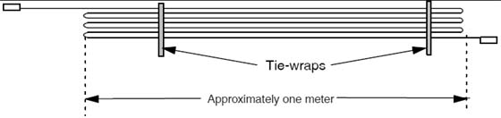
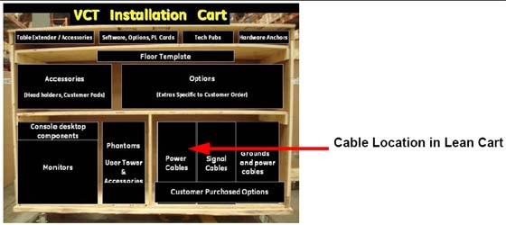
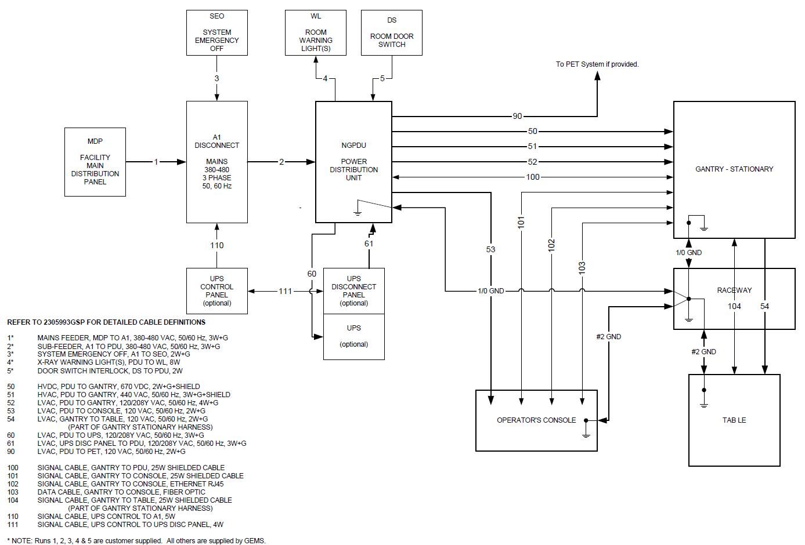

Operating Documentation
Direction 5193574-800, Rev# 22
LightSpeed 7.X Service Methods
Module Version 1.0, Version Date 4/22/10
Operating Documentation |
| ||||
| NOTICE: Potential for Data Loss and/or Equipment Damage To prevent potential data loss and equipment damage, please do the following:
| ||||
Site use of conduit, floor duct, wall duct, or a raised computer floor, as well as the individual component layout determines the system cable sequence. If your site has floor or wall ducts that will interfere with placement of the table/gantry, it may be important to have the movers unload the cable boxes (8 & 9) first and run those cables while others unload the subsystems.
Try to run the system cables after the contractor completes the contractor supplied wiring.
All ground wires and other contractor wiring should be complete to the point of equipment placement.
| ||||
| Potential for Equipment Damage | ||||
Do not store excess cable in the bottom of the PDU or Gantry.
Do not store excess cable behind or under the installed components (table, PDU, gantry or console). Check with the site electrical contractor, before hiding excess in conduits or cable ducts. Refer to the electrical code requirements for duct fill rate in your area. Shown on the site print, the fill rate will meet all requirement when cables are run point to point without access.
Illustration 1: Excess Cable Storage Configuration

Keep signal and control cables away from power cables and power wiring. When you lay cables in a raceway, locate the signal cables in a separate section of the raceway, or a separate conduit.
Check all connections for tightness.
Use suitable tools and judgment.
Check all visible connections, especially ground connections.
Check for reasonable cable routing.
Take into consideration necessary take-up distances for equipment maintenance, etc.
Try to complete as neat a job as possible.
Identify all system cables by the system component designators listed in Table 1. Each end of a system cable has a label, and may have a color near the connector, (refer to Table 2) to indicate the component and the jack identifier of the component. All cables are located on the lower right shelf of the lean cart.
Table 1: System Component Identifiers
| Designator | System Component |
| CT2 | Gantry |
| CT1 | Patient Table |
| PM | Power Distribution Unit |
| OC | Operator Console (Console Computer) |
| WL | X-Ray ON Warning Light |
The ends of the cables may be marked with a piece of blue, yellow, red, or orange colored tape to help with the cable installation. Table 2 lists the subcomponent, and corresponding color.
Table 2: Cable Color Identifier
| Subcomponent | Color |
| Gantry | Blue |
| Table | Yellow |
| PDU | Red |
| Console Computer | Orange |
If your system is not a lean packed system, locate the boxes with the system cables. They should match the cables in the following table.
Illustration 2: Cable Location in Lean Cart

Table 3: System Interconnect Cables
| VCT 7.X | |||
| Part Number | |||
| Run No. | Description | Long Cables (Kit 2281840-6) | Short Cables (Kit 2281840-7) |
| 1 | Facility MDP to Room Disconnect (A1) | cust. supplied | cust. supplied |
| 2 | Room Disconnect (A1) to PDU | cust. supplied | cust. supplied |
| 3 | Room Disconnect (A1) to System E-Off | cust. supplied | cust. supplied |
| 4 | PDU to Room Warning Light(s) | cust. supplied | cust. supplied |
| 5 | PDU to Scan Room Door Switch | cust. supplied | cust. supplied |
| 50 | HVDC Power Cable - PDU to Gantry | 2343529 | 2343529-2 |
| 51 | HVAC Power Cable - PDU to Gantry | 2343530 | 2343530-2 |
| 52 | LVAC Power Cable - PDU to Gantry | 2343528 | 2343528-2 |
| 53 | LVAC Power Cable - PDU To Operator’s Console | 5121809 | 5121809-2 |
| 54 | LVAC Power Cable - Gantry to Table | n/a | n/a |
| 55 | Ground, PDU to Raceway | 2371450 | 2371450-2 |
| 56 | Ground, Raceway to Console | 2371450-3 | 2371450-4 |
| 60 | LVAC Power Cable - PDU to Optional UPS | - | - |
| 61 | LVAC Power Cable - UPS Disconnect Panel to PDU | - | - |
| 90 | LVAC Power Cable - PDU to PET | - | - |
| 100 | Signal Cable - Gantry to PDU | 5120646 | 5120646-2 |
| 101 | Signal Cable - Gantry to Console | 5120645 | 5120645-2 |
| 102 | Signal Cable (Ethernet) - Gantry to Console | 2373436-2 | 2373436-3 |
| 103 | Data Cable (Fiber Optic) - Gantry to Console | 5125259 | 5125259-2 |
| 104 | Signal Cable - Gantry to Table | n/a | n/a |
| 110 | Signal Cable - UPS Control to Room Disconnect (A1) | - | - |
| 111 | Signal Cable - UPS Control to UPS Disconnect Panel | - | - |
| 112 | Cardiac Monitor Cat 5 - Signal cable between console and Gantry Option Board (GOB) (Quantity 2) | 2373436-4 | 2373436-6 |
Shortening power cables is not allowed. The crimping tool and ferrules are not shipped with the system.
If longer or shorter cables are required, order the correct set.
Excess cables cannot be stored under or behind the PDU, gantry or console.
Table 4: System Interconnect Cables
| VCT 7.2 | |||
| Part Number | |||
| Run No. | Description | Long Cables (Kit 2281840-11) | Short Cables (Kit 2281840-12) |
| 1 | Facility MDP to Room Disconnect (A1) | cust. supplied | cust. supplied |
| 2 | Room Disconnect (A1) to PDU | cust. supplied | cust. supplied |
| 3 | Room Disconnect (A1) to System E-Off | cust. supplied | cust. supplied |
| 4 | PDU to Room Warning Light(s) | cust. supplied | cust. supplied |
| 5 | PDU to Scan Room Door Switch | cust. supplied | cust. supplied |
| 50 | HVDC Power Cable - PDU to Gantry | 2343529 | 2343529-2 |
| 51 | HVAC Power Cable - PDU to Gantry | 2343530 | 2343530-2 |
| 52 | LVAC Power Cable - PDU to Gantry | 2343528 | 2343528-2 |
| 53 | LVAC Power Cable - PDU To Operator’s Console | 5121809 | 5121809-2 |
| 54 | LVAC Power Cable - Gantry to Table | n/a | n/a |
| 55 | Ground, PDU to Raceway | 2371450 | 2371450-2 |
| 56 | Ground, Raceway to Console | 2371450-3 | 2371450-4 |
| 60 | LVAC Power Cable - PDU to Optional UPS | - | - |
| 61 | LVAC Power Cable - UPS Disconnect Panel to PDU | - | - |
| 90 | LVAC Power Cable - PDU to PET | - | - |
| 100 | Signal Cable - Gantry to PDU | 5120646 | 5120646-2 |
| 101 | Signal Cable - Gantry to Console | 5120645 | 5120645-2 |
| 102 | Signal Cable (Ethernet) - Gantry to Console | 2373436-2 | 2373436-3 |
| 104 | Signal Cable - Gantry to Table | n/a | n/a |
| 110 | Signal Cable - UPS Control to Room Disconnect (A1) | - | - |
| 111 | Signal Cable - UPS Control to UPS Disconnect Panel | - | - |
| 112 | Cardiac Monitor Cat 5 - Signal cable between console and Gantry Option Board (GOB) (Quantity 2) | 5193967-4 | 5193967-6 |
Table 5: Fiber Optic
| Run No. | Description | Long Cable | Short Cable |
| 103 | Data Cable (Fiber Optic) - Gantry to Console | 5334833 | 5334833 |
Refer to Illustration 3 for the System Interconnect Diagram.
Illustration 3:
